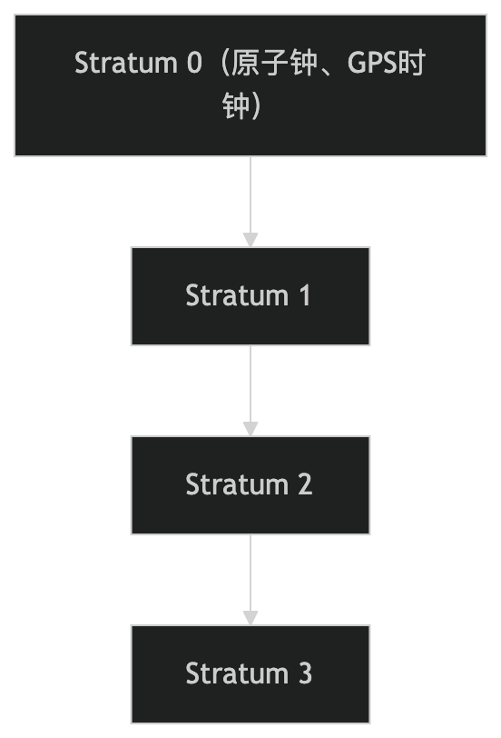

NTP 协议
NTP（Network Time Protocol、ネットワークタイムプロトコル）は、コンピュータシステムの時刻を同期するためのプロトコルです。
NTPは階層的なタイムサーバーアーキテクチャを通じて、ネットワーク内のすべてのデバイスの時刻を一致させ、精度はミリ秒、さらにはマイクロ秒レベルに達することができます。
NTPはインターネット上で最も広く使用されている時刻同期プロトコルであり、コンピュータネットワーク、金融取引、科学実験などの分野で広く応用されています。
NTPの動作原理
NTPはクライアント・サーバーモデルを使用し、階層的なタイムサーバーアーキテクチャを通じて時刻同期を実現します。
1. NTPの階層アーキテクチャ
NTPは階層（Stratum）アーキテクチャを採用し、タイムサーバーを異なる階層に分けています：
- Stratum 0：高精度の時刻源、例：原子時計、GPSクロック。
- Stratum 1：Stratum 0 に直接接続されたタイムサーバー。
- Stratum 2：Stratum 1 から時刻を同期するタイムサーバー。
- Stratum 3：Stratum 2 から時刻を同期するタイムサーバー。

- 階層が低いほど、時間精度が高くなります。
- クライアントは通常、Stratum 2 または Stratum 3 のタイムサーバーから時刻を同期します。
2. 時刻同期プロセス
NTPクライアントは以下の手順でタイムサーバーと時刻を同期します：

- NTPリクエストの送信：
- クライアントはタイムサーバーにNTPリクエストパケットを送信し、送信時刻を記録します。\( T_1 \)。
- NTPレスポンスの返信：
- サーバーはリクエストを受信した後、受信時刻を記録します。\( T_2 \)送信応答時間の合計\( T_3 \)。
- 服务器将\( T_1 \)、\( T_2 \)、\( T_3 \)応答パケットと一緒にクライアントに送信されます。
- 時間オフセットの計算：
- クライアントは応答受信時刻を記録します\( T_4 \)。
以下の式で時間オフセットを計算します \( \theta \)とネットワーク遅延\( \delta \)：
\[ \theta = \frac{(T_2 - T_1) + (T_3 - T_4)}{2} \] \[ \delta = (T_4 - T_1) - (T_3 - T_2) \]
- ローカル時刻の調整：
- クライアントは時間オフセットに基づいて\( \theta \)ローカル時刻を調整します。
NTPの重要な特性
-
高精度な時刻同期：
- 精度はミリ秒、さらにはマイクロ秒レベルに達することができます。
-
分层架构：
- 階層アーキテクチャにより、時刻源の信頼性と拡張性を実現します。
-
容错机制：
- 複数のタイムサーバーをサポートし、最適な時刻源を自動的に選択します。
-
安全性：
- 認証と暗号化をサポートし、タイムサーバーの偽造を防止します。
-
兼容性：
- 多種多様なOSやデバイスをサポートしています。
NTPの応用シナリオ
NTPは以下のようなシーンで広く利用されています：
- 计算机网络：
- ネットワーク内のすべてのデバイスの時刻を同期し、ログとイベントのタイムスタンプの一致性を確保します。
- 金融交易：
- 取引記録の時刻の正確性を確保し、時刻の不一致による紛争を防止します。
- 科学实验：
- 分散実験においてデバイスの時刻を同期し、データの一貫性を確保します。
- 工业控制：
- 産業用デバイスの時刻を同期し、制御システムの精度を確保します。
- 互联网服务：
- サーバー時刻を同期し、サービスの正常な稼働を確保します。
NTPの安全性
NTPの安全性を高めるために、以下の対策を講じることができます：
- 身份验证：
- 鍵を使用してタイムサーバーの身元を検証し、偽造を防止します。
- 加密通信：
- 暗号化プロトコル（NTS、Network Time Securityなど）を使用して通信データを保護する。
- 访问控制：
- タイムサーバーへのアクセス権限を制限し、不正アクセスを防止します。
NTPの代替案
一部のシナリオでは、以下の代替案を使用できます：
- SNTP（Simple Network Time Protocol）：
- NTPの簡易版であり、時刻精度への要求が高くないシナリオに適しています。
- PTP（Precision Time Protocol）：
- より高い時刻精度が必要なシナリオ（例：産業制御）に使用されます。
- GPS 时钟：
- GPS信号を直接使用して時刻を同期し、高精度のニーズに適しています。
まとめると、NTPはコンピュータシステムの時刻を同期するためのプロトコルであり、階層的なタイムサーバーアーキテクチャを通じて高精度な時刻同期を実現します。コンピュータネットワーク、金融取引、科学実験などの分野で広く応用され、時刻の一致性を確保するための重要なツールです。
其他扩展